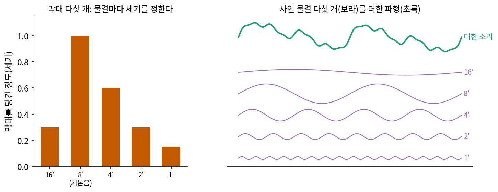
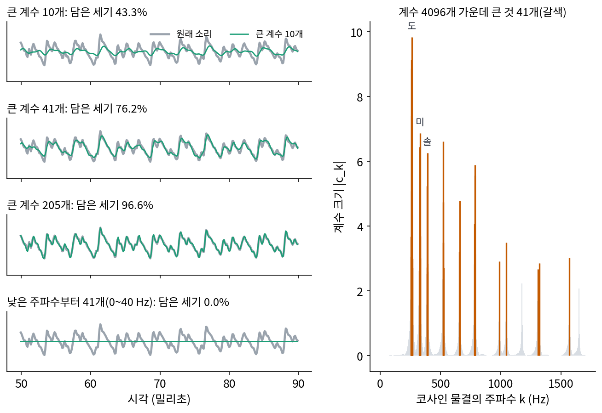
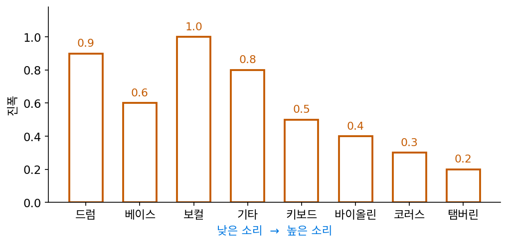
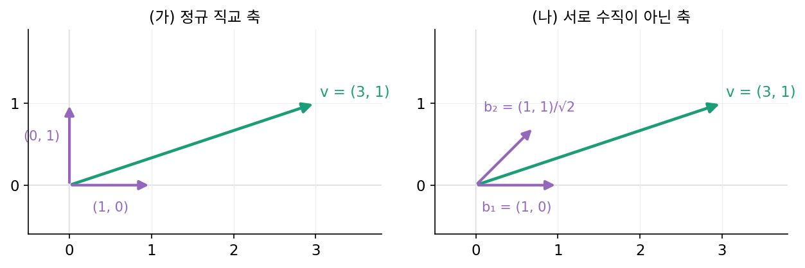
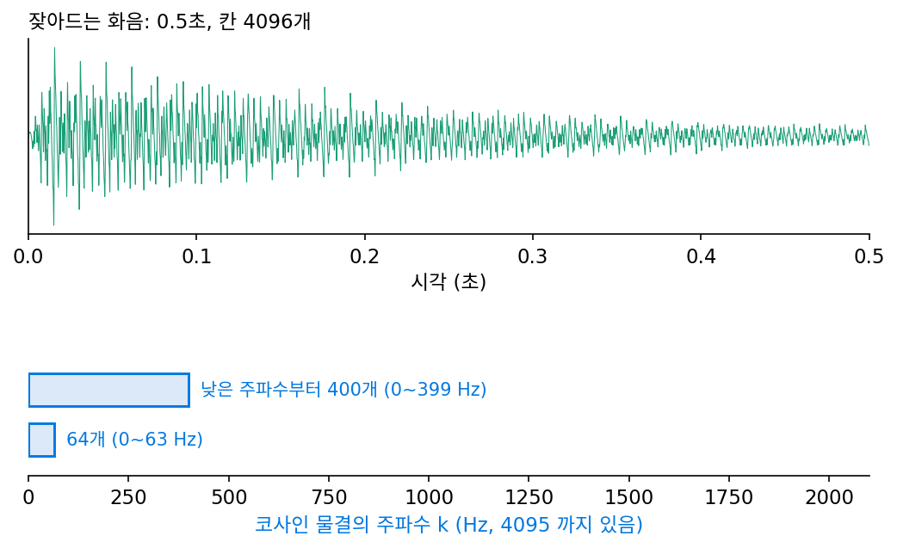
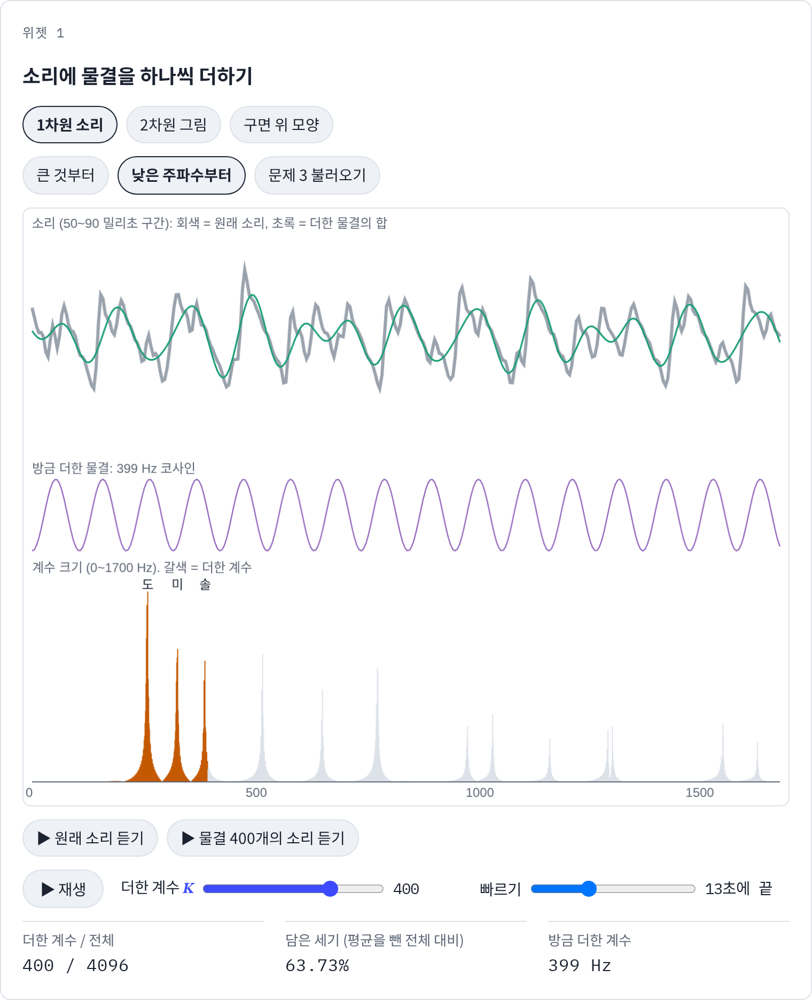

n차원 그림 그리기: 바탕의 차원을 올려도 같은 일
이 장의 물음
돌아가는 화살표를 긴 것부터 하나씩 이어 붙이면 펜 끝이 글자 「ㅅ」을 점점 또렷하게 그려 냈다(에피사이클). 펜은 평면이나 공간을 움직였지만, 값이 매겨지는 바탕은 「시간」이라는 줄 하나였고, 시각 하나에 펜 끝의 자리 하나가 붙어 있었다. 그러나 사진은 가로·세로로 펼쳐진 평면의 칸마다 밝기가 붙어 있고, 지구의 지형은 공 모양 표면의 방향마다 높이가 붙어 있다. 이런 신호에도 「물결을 하나씩 더해 그림이 나타나게 하는」 일을 할 수 있을까?
ML에서도 같은 장면을 본다. 그림 디퓨전 모델이 노이즈에서 그림을 만들어 가는 중간 단계를 꺼내 보면, 처음에는 큰 덩어리의 밝고 어두움이 생기고 가는 선과 질감은 맨 나중에 생긴다. 2024년에 나온 한 그림 생성 모델은 아예 작은 그림을 먼저 만들고 그것을 키워 가며 세부를 채운다. 굵은 것부터 그리는 순서는 그림에만 맞는 것일까, 소리나 3차원 모양에도 통할까?
이 장은 다음 물음에 차례로 답한다.
- 소리처럼 줄 위에 놓인 신호에 물결을 하나씩 더할 때, 어떤 순서로 더해야 원래 소리에 가장 빨리 다가갈까?
- 그림처럼 평면에 놓인 신호에는 어떤 물결을 더할까? 큰 계수부터 더하는 순서와 굵은 무늬부터 더하는 순서는 같을까?
- 공 표면 위의 모양에 구면 조화를 하나씩 더하면 모양은 어떤 차례로 나타날까? 차수 몇까지 더하면 충분할까?
- 줄·평면·공 표면 세 바탕에서 「물결로 다시 적고 큰 것부터 하나씩 더하기」를 하면 무엇이 같고 무엇이 다를까? 계수 1%만 남겨도 그림이 남는 신호와 남지 않는 신호는 무엇이 다를까?
소리: 큰 물결부터 하나씩 더하기
피아노로 도·미·솔을 함께 누른 소리를 흉내 내어, 세 음을 사인 물결로 만들어 더하면 스펙트럼에는 막대가 셋만 선다. 진짜 피아노 소리는 그보다 복잡하다. 건반 하나를 눌러도 기본음 말고 그 두 배, 세 배 주파수의 배음이 함께 울리고, 소리는 누른 순간부터 점점 작아진다. 이런 소리를 칸 4096개로 적으면 코사인 물결의 계수도 4096개가 나오는데, 그 가운데 숫자를 K개만 남길 수 있다면 어떤 K개를 남겨야 할까? 그리고 K개를 하나씩 더해 갈 때 어떤 순서로 더해야 소리가 가장 빨리 원래 소리에 다가갈까?
역사: 막대 아홉 개로 고르는 음색
물결 몇 개를 골라 더해서 악기 소리를 만든다는 생각을 공장에서 찍어 내는 물건으로 만든 것이 해먼드 오르간이다. 미국의 해먼드(Laurens Hammond)는 1934년 1월에 「전기 악기」 특허를 신청해 4월 24일에 받았고, 1935년에 첫 생산품을 내놓았다. 오르간 안에서는 톱니바퀴처럼 생긴 바퀴(톤휠)가 전자석 앞에서 돌며 사인 물결에 가까운 전기 신호를 만든다. 바퀴마다 만드는 주파수가 정해져 있어서, 건반 하나를 누르면 그 음의 기본음과 몇 가지 배음에 해당하는 물결이 함께 나온다.
연주자는 드로바(drawbar)라 부르는 막대로 음색을 고른다. 건반 묶음 하나에 막대가 아홉 개 있고, 막대를 많이 당길수록 그 막대가 맡은 물결이 크게 섞인다. 막대는 파이프 오르간의 관 길이에서 온 이름(피트 수)으로 부르는데, 8′ 막대가 기본음, 16′ 막대가 한 옥타브 아래, 4′·2′·1′ 막대가 한·두·세 옥타브 위의 물결이고, 나머지 막대가 그 밖의 배음을 맡는다. 연주자는 물결마다의 세기를 막대 높이로 정해서 소리를 만드니, 아홉 개의 숫자로 음색 하나를 적는 것이다. 악기 소리 하나가 물결 몇 개로 꽤 잘 흉내 내진다는 사실 위에 선 악기다.


사인 물결 몇 개를 더하는 거면 지금은 numpy 한 줄인데요. 막대 아홉 개짜리 오르간이 그렇게 대단한 물건이었어요?

1934년에 사인 물결 하나를 만들려면 무엇이 있어야 했는지 본문에서 찾아볼까요?

음… 톤휠이요. 바퀴가 전자석 앞에서 돌아야 물결 하나가 나오고, 주파수마다 바퀴가 따로 정해져 있어요. 물결을 하나 더 쓰려면 바퀴를 하나 더 깎아 넣어야 하는 거네요.

그럼 어떤 물결을 얼마나 섞을지는 어떻게 정했어요? 계수를 계산해서 넣은 건 아니죠?

연주자가 막대를 당겨 보고 귀로 들으며 정한 아홉 개의 숫자예요. 그 높이를 정해 둔 채로 건반을 누르면요. 누른 뒤 점점 잦아드는 피아노 소리를 흉내 낼 수 있을까요?

막대 높이가 세기인데 높이가 그대로면 세기도 그대로잖아요. 잦아드는 소리는 막대 아홉 개로는 안 맞을 것 같아요.
지금 우리는 바퀴 대신 숫자로 물결 4096개를 마음대로 쓸 수 있어요. 그런데 그중 몇 개만 남겨야 한다면, 무엇을 보고 고를까요?
잦아드는 화음을 물결 4096개로
해먼드 오르간의 막대는 아홉 개로 정해져 있었지만, 소리를 받아 적는 쪽이라면 물결을 마음대로 고를 수 있다. 숫자로 확인해 보자. 도·미·솔(261.63, 329.63, 392.00 Hz)을 세기 1.0, 0.7, 0.5로 섞되, 음마다 기본음부터 여섯째 배음까지(세기는 배음 번호 h 에 대해 1/h)를 넣었다. 섞은 사인 물결은 3 × 6 = 18개이고, 소리는 0.01초 동안 커진 뒤 e−t/0.25로 잦아든다. 1초에 8192번 재서 0.5초 동안 칸 4096개를 얻었고, 평균은 먼저 뺐다.
이 4096칸을 코사인 물결 4096개로 다시 적는다. 0.5초에서 잘라 낸 소리의 끝과 처음이 맞지 않기 때문에, 사인·코사인을 함께 쓰는 대신 코사인만 쓴다. 끝이 맞지 않는 구간은 코사인 꼴(이산 코사인 변환)로 적어야 계수가 빨리 준다는 것을 로봇 팔의 궤적에서 보았다. 칸 4096개를 이 간격으로 재면 k번째 코사인 물결은 정확히 k Hz다.
가장 큰 계수는 263 Hz(−9.828)이고, 다음은 261, 262, 260 Hz다. 도(261.63 Hz) 하나가 계수 넷으로 번졌다. 소리가 잦아드는 동안 물결의 높이가 바뀌므로, 한 가지 주파수의 사인 물결이 이웃한 코사인 물결 몇 개에 나뉘어 담긴다. 그래서 사인 물결 18개를 섞었어도 계수 18개로는 모자란다.
계수를 큰 것부터 K개 남겼을 때와, 낮은 주파수부터 K개 남겼을 때 담은 세기(남긴 계수의 제곱합 ÷ 전체 제곱합)를 비교하면 다음과 같다. 상대 오차는 되살린 소리와 원래 소리의 차이를 제곱해 더한 값의 제곱근을, 원래 소리의 제곱합의 제곱근으로 나눈 비율이다.
| 남긴 계수 K | 큰 것부터: 담은 세기 | 큰 것부터: 상대 오차 | 낮은 주파수부터: 담은 세기 |
|---|---|---|---|
| 1 | 7.5% | 96.2% | 0.0% |
| 10 | 43.3% | 75.3% | 0.0% |
| 41 (1%) | 76.2% | 48.8% | 0.0% |
| 205 (5%) | 96.6% | 18.6% | 0.0% |
| 410 (10%) | 99.3% | 8.7% | 63.9% |
| 1000 | 99.98% | 1.6% | 90.3% |
큰 것부터 더하면 계수 1%(41개)로 세기의 76.2%, 5%로 96.6%가 담기고, 세기 99%에 계수 368개가 든다. 낮은 주파수부터 더하면, 가장 낮은 음이 261 Hz이니 그 아래가 비어 있어서 처음 41개(0~40 Hz)에는 아무것도 없고, 같은 99%에 계수 1961개가 든다.

이렇게 정규 직교 기저(서로 수직이고 길이가 1인 축들)로 적은 신호에서 크기가 큰 계수 K개만 남기고 나머지를 0으로 두는 근사를 최선 K항 근사 (큰 계수 K개만 남기기 / best K-term approximation)라 한다.
축이 서로 수직이면 버린 물결들도 서로 수직이어서, 복원 오차의 제곱합(되살린 신호와 원래 신호의 칸별 차이를 제곱해 더한 값)은 버린 계수의 제곱을 그냥 더한 값이 된다(피타고라스 정리). 이 오차를 가장 작게 하려면 제곱이 가장 작은 것들을 버리면 되므로, 큰 것부터 남기는 것이 K개로 할 수 있는 가장 좋은 선택이다. 「큰 것부터」는 소리를 듣지 않고도 계수 목록만 보고 정할 수 있다는 것도 좋은 점이다.
ML에서: 소리에서는 큰 물결이 낮은 물결이 아니다
그림 디퓨전 모델은 굵은 무늬부터 그린다는 설명이 널리 퍼져 있다. 그 설명을 글로 정리한 딜레만(Sander Dieleman, 구글 딥마인드)은 2024년 블로그 글 「디퓨전은 스펙트럼 자기회귀다(Diffusion is spectral autoregression)」에서 같은 계산을 소리 파형에도 해 보았다. 소리 파형 여러 개의 파워 스펙트럼을 평균했더니 주파수를 따라 한쪽으로 고르게 줄어드는 꼴이 아니었고, 그는 「디퓨전은 그냥 스펙트럼 자기회귀다」라는 말이 소리 파형에는 맞지 않는다고 적었다. 같은 글에서 그는 멜 스펙트로그램(귀의 눈금에 맞춰 주파수를 묶은 그림)으로 바꾸면 고르게 줄어드는 꼴이 다시 나타난다고도 적었다. 위의 화음에서도 큰 계수 41개는 257 Hz부터 1570 Hz 사이에 흩어져 있었다. 「큰 것부터」와 「낮은 것부터」가 같은 순서가 되는지는 신호의 스펙트럼 모양에 달려 있다. 소리에서 두 순서가 얼마나 다른지는 아래 문제 3에서 숫자로 본다.
문제 1. 밴드에서 악기 둘만 남기면
여덟 악기로 된 밴드가 있다. 악기마다 진폭은 보컬 1.0, 드럼 0.9, 기타 0.8, 베이스 0.6, 키보드 0.5, 바이올린 0.4, 코러스 0.3, 탬버린 0.2 이고, 낮은 소리를 내는 순서는 드럼, 베이스, 보컬, 기타, 키보드, 바이올린, 코러스, 탬버린이다. 악기들은 서로 다른 음을 내서 소리의 세기(진폭의 제곱)가 그대로 더해진다. (가) 악기 둘만 남겨 전체 소리 세기를 가장 많이 남기려면 어느 둘이고, 몇 %가 남는가? (나) 「낮은 소리가 바탕이니까」 하며 낮은 소리부터 둘을 남기면 몇 %인가? (다) 두 악기가 같은 음을 같은 박자, 같은 위상으로 연주하면 세기가 그대로 더해지는가?

큰 것 둘이면 보컬이랑 드럼이요. 진폭이 1.0 + 0.9 = 1.9이고 전체가 4.7이니까 40.4%요.
문제에서 소리의 세기를 무엇이라고 했죠?

아, 진폭의 제곱이요. 보컬 1, 드럼 0.81이고 전체 제곱합이 3.35라서 1.81 ÷ 3.35 = 54.0%예요. 진폭으로 셌을 때보다 많이 남네요.
(나)는 드럼이랑 베이스니까 (0.81 + 0.36) ÷ 3.35 = 34.9%야. 보컬을 빼 버리니까 손해가 커.

(다)는요? 진폭 0.5인 두 악기가 같은 음을 같은 위상으로 내면요.
같은 음, 같은 위상이면 두 물결이 똑같이 겹치니까… 합의 진폭이 1이 돼서 세기는 1이에요. 따로 더하면 0.25 + 0.25 = 0.5인데요.

어? 세기가 그냥 더해지는 게 아니었어?
반대 위상이면요?

지워져서 0이에요. 세기가 그냥 더해진다는 건 「서로 다른 음」이라는 조건이 있을 때만이네요. 서로 수직인 축이어야 피타고라스처럼 더해지는 것처럼요.

조별 발표에서 둘이 같은 내용을 겹쳐 말하면 시간은 두 배로 쓰는데 내용은 하나인 거랑 비슷하네요. 겹치지 않아야 각자 말한 내용이 더해져요.
문제 2. 기울어진 축에서 큰 계수 하나만 남기면
평면의 벡터 v = (3, 1) 을 축 하나로만 적으려 한다. (가) 정규 직교 축 (1, 0), (0, 1) 에서 큰 계수 하나만 남기면 오차(v 와 남긴 벡터의 차이)의 제곱은 얼마이고, 세기의 몇 %를 담는가? (나) 서로 수직이 아닌 두 축 b₁ = (1, 0), b₂ = (1, 1)/√2 로 v 를 적으면 계수는 얼마인가? 큰 계수 하나를 그대로 남기면 오차의 제곱은? b₁ 방향 위에서 v 에 가장 가까운 점까지의 거리 제곱은? (다) 두 계수의 제곱합을 |v|² 과 비교하고, 「큰 것부터 남기기」가 가장 좋은 선택이 되려면 축에 무엇이 필요한지 말하라.

(가)는 3을 남기고 1을 버리니까 오차의 제곱이 1, 세기는 9 ÷ 10 = 90%요. (나)는 v = 2b₁ + 1.414b₂가 나와요. 큰 계수 2를 남기면 버린 계수가 1.414니까 오차의 제곱은 1.414² = 2.0이요. 직접 재 봐도 v − 2b₁ = (1, 1)이라 2.0으로 맞아요.
그런데 b₁ 방향의 점 가운데 v에 가장 가까운 것도 2b₁일까요?
b₁이 (1, 0)이니까 v를 바로 아래로 내리면 (3, 0)이고, 그건 3b₁이에요. 오차의 제곱이 1이에요. 계수 2를 그대로 남긴 것보다 훨씬 가깝네요.
축이 기울어 있으면 b₂ 축 자체가 b₁ 방향 성분 1/√2 을 품고 있어서, b₂ 계수를 버리면 그 b₁ 방향 성분까지 같이 버리는 거야. (다)도 봐. 계수 제곱합이 2² + 1.414² = 6인데 |v|²은 10이야. 세기가 계수 제곱으로 나뉘지 않으니 「담은 세기 몇 %」라는 말부터 성립하지 않아.

그래요. 「큰 계수부터 남기면 가장 좋다」와 「담은 세기 = 계수 제곱의 합」은 둘 다 축이 서로 수직이고 길이가 1일 때의 이야기예요. 이 장에서 쓰는 코사인 물결, 바둑판 물결, 구면 조화가 모두 정규 직교라서 그 계산이 통하는 거고요.

선형대수에서 그람–슈미트로 축을 수직으로 다시 세우던 게 이것 때문이었구나. 수직이 아니면 좌표 하나만 보고는 아무것도 못 정해.
문제 3. 낮은 주파수 400개만 남기는 소리 모델
그림 생성 모델이 굵은 무늬부터 그린다는 데서 착안해, 소리 조각마다 낮은 주파수 쪽 코사인 계수부터 일정 개수만 남기는 모델을 만든다고 하자. 이 장의 잦아드는 화음(칸 4096개)으로 시험한다. (가) 낮은 주파수부터 400개(0~399 Hz)를 남기면 세기의 몇 %가 담기는가? 큰 것부터 400개면? (나) 개수를 64개로 줄이면 두 방법은 각각 몇 %인가? (다) 이 화음의 세기는 주파수 구간에 어떻게 나뉘어 있고, 그것이 「낮은 것부터」에 무엇을 뜻하는가? (위젯 1의 「문제 3 불러오기」로 확인해 보자.)

계산해 보니 (가)는 낮은 주파수부터 63.7%, 큰 것부터 99.2%요. (나)는 64개면 낮은 주파수부터 0.0%, 큰 것부터 84.1%예요. 0%는 계산이 틀린 줄 알았어요.
0~63 Hz에 이 화음의 물결이 있나요?
가장 낮은 음이 261 Hz니까 없네요. 낮은 쪽 칸을 아무리 많이 남겨도 비어 있는 칸만 남긴 거예요.
(다)는 구간별로 0~200 Hz 0%, 200~400 Hz 63.7%, 400~800 Hz 24.5%, 800~1600 Hz 9.9%, 1600 Hz 위 1.8%야. 400 Hz 위에 세기가 3분의 1 넘게 있으니 400개를 남겨도 그만큼을 한꺼번에 잃어. 그리고 50 Hz씩 묶어 보면 250, 500, 650, 750 Hz 근처에 봉우리가 있고 그 사이는 골짜기야. 주파수를 따라 한쪽으로 줄지 않아.
그러면 그림에서 「굵은 무늬부터」가 잘 통한다고 할 때, 그림의 스펙트럼은 어떤 꼴이어야 할까요?

낮은 주파수일수록 세고 높을수록 고르게 약해지는 꼴이어야 해요. 그래야 낮은 것부터가 큰 것부터와 거의 같은 순서가 되니까요. 소리는 음높이와 배음 자리에 세기가 몰려 있어서 그렇지 않고요.

시험 범위를 1단원부터 차례로 공부하는 게 늘 좋은 건 아니네요. 배점이 큰 단원이 뒤에 몰려 있으면 앞에서부터 공부하다 시간이 끝나요.
